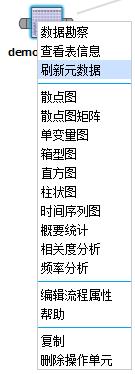
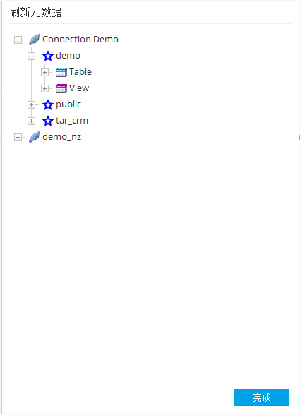

通过本功能可将数据库资源刷新到当前缓存中。用户在第一次访问数据库中的资源后，系统会将当时的数据库资源进行缓存。当用户通过数据库管理工具对数据库进行更改后需同步数据库资源到缓存中。
通过下面的步骤打开数据库资源同步功能：

打开窗口后，可以看到当前用户所能访问的所有数据库资源。其中第一级资源与数据连接配置中的个人连接资源是一致的。

选中待刷新的资源后右击出现菜单，点击刷新选项后刷新选中节点的下一级资源。